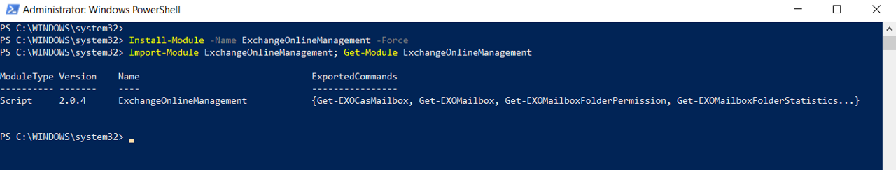
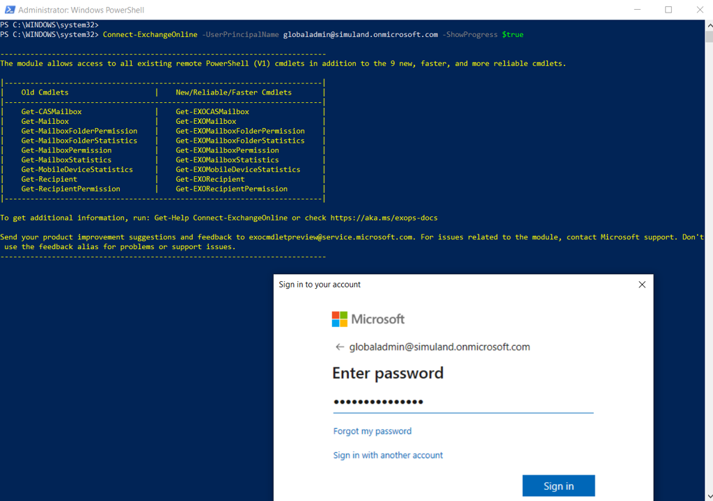
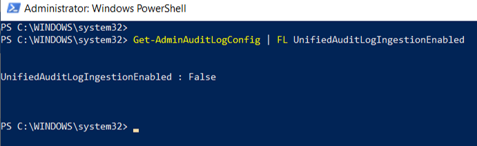
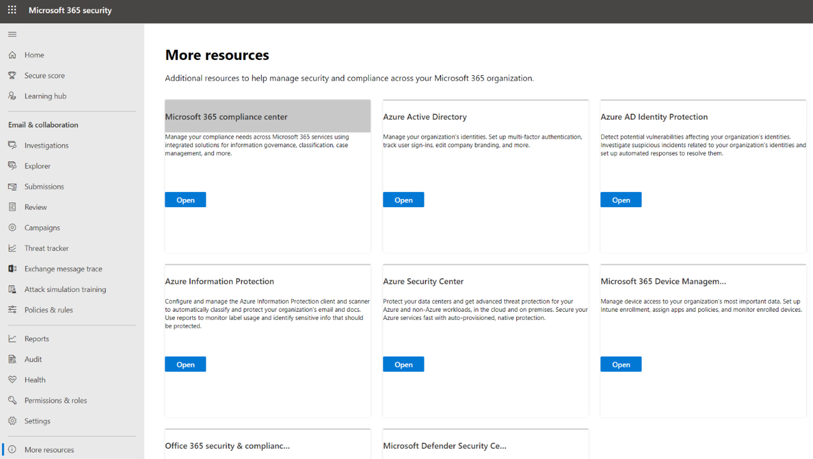
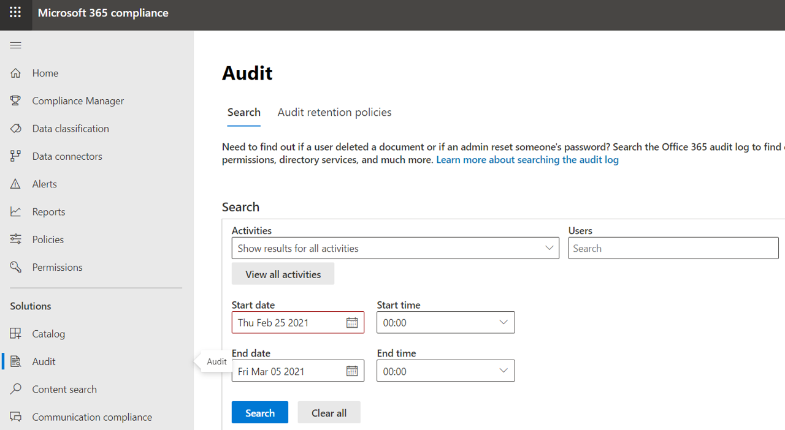
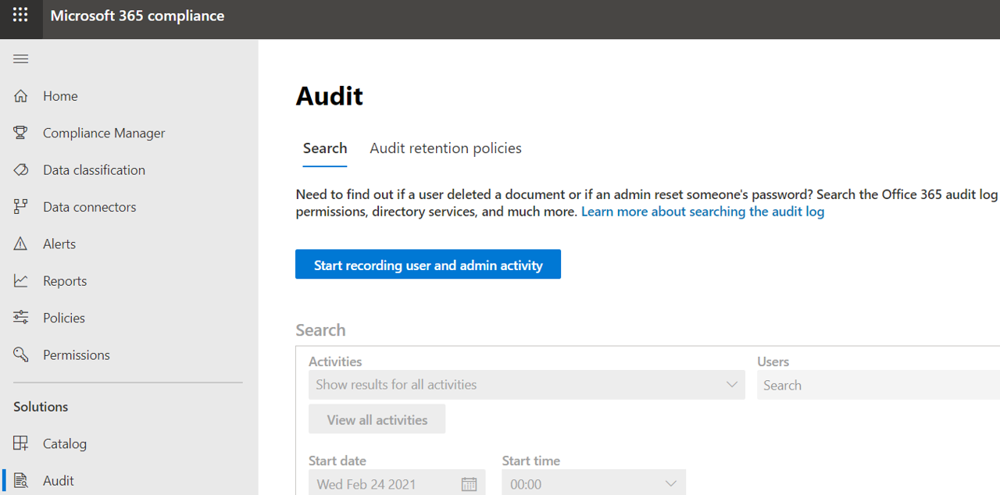

Enable Office 365 Audit Log Search
Contents
Enable Office 365 Audit Log Search#
Office 365 auditing needs to be enabled before configuring Microsoft Cloud App Security (MCAS) or connecting other solutions such as Azure Sentinel data connectors to it. Remember that the Audit log search is turned on by default for Microsoft 365 and Office 365 enterprise organizations. This includes organizations with E3/G3 or E5/G5 subscriptions. You can follow steps 1-3 to verify if it is enabled in your lab environment.
Pre-requirements#
Office 365 E5 subscription
Microsoft 365 E5 subscription
You must be assigned the
Audit Logs rolein Exchange Online to turn audit log search on or off in your Microsoft 365 organization. By default, this role is assigned to the Compliance Management and Organization Management role groups on the Permissions page in the Exchange admin center. Global admins in Microsoft 365 are members of the Organization Management role group in Exchange Online.
Main Steps#
Install Exchange online PowerShell v2 module
Connect to Exchange Online
Verify if Audit Log Search is enabled in Office 365
Enable Audit Log search in Office 365
Test Office 365 Audit via the Microsoft 365 compliance center
1. Install Exchange Online PowerShell v2 Module#
In a Windows endpoint, open PowerShell as Administrator
Install and import the Exchange Online PowerShell V2 module
Install-Module –Name ExchangeOnlineManagement
Import-Module ExchangeOnlineManagement
Get-Module ExchangeOnlineManagement

2. Connect to “Exchange Online”#
In the same PowerShell session, run the following command with an account with the Audit Logs role assigned.
Connect-ExchangeOnline –UserPrincipalName <account>@<domain> -ShowProgress $true

3. Verify if Audit Log Search is Enabled in Office 365#
Check the current status of Office 365 auditing by running the following command:
Get-AdminAuditLogConfig | FL UnifiedAuditLogIngestionEnabled

4. Enable Audit Log Search in Office 365#
Run the following command to turn on
audit log searchin Office 365
Set-AdminAuditLogConfig -UnifiedAuditLogIngestionEnabled $true
Verify if
audit log searchin Office 365 is enabled with the following command:
Get-AdminAuditLogConfig | FL UnifiedAuditLogIngestionEnabled
5. Test Office 365 Audit via the Microsoft 365 Compliance Center#
Navigate to Microsoft 365 Security Center
Go to More Resources > Microsoft 365 compliance center > Open

Under the
Solutionssection, click onAudit. You should now be allowed to use this feature.

Before enabling auditing in Office 365, you would see something like the image below:

Wait at least an hour for this setting to propagate across other services that depend on it. Services that depend on it are Microsoft Cloud App Security (MCAS) and Azure Sentinel Office 365 and MCAS data connectors.